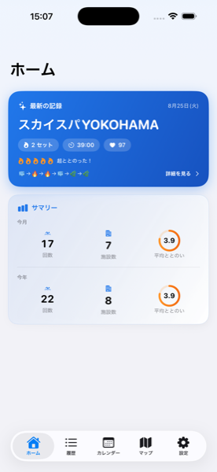
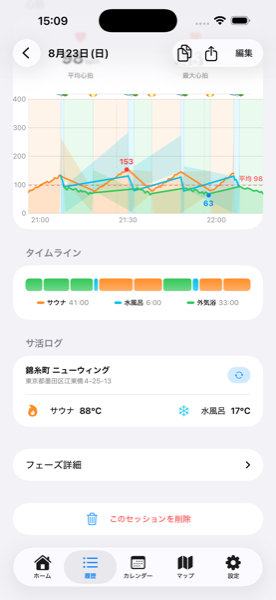
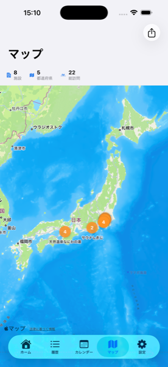
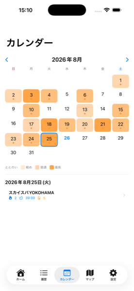
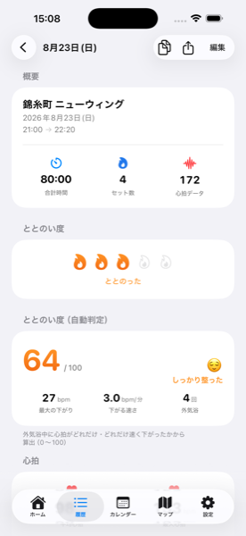

Apple Watch でサウナを記録するアプリ
App Store で見る初回は心拍データへのアクセス許可を求められます。許可すると心拍が自動で記録されます。
すべて Apple Watch だけで完結します。iPhone を持ち込む必要はありません。
セッションの終了ボタンは、タップではなく長押しで反応します。
サウナでは手や画面が濡れていて誤タップが起きやすいため、記録を守る目的で長押しにしています。タップしても反応しないのは不具合ではありません。
セッションを終了すると、記録は自動で iPhone に同期されます。


履歴タブから記録をタップすると、心拍の推移がグラフで見られます。サウナ・水風呂・外気浴が色分けされているので、そのときの体の反応が一目で分かります。
記録の詳細画面から、行ったサウナ施設を登録できます。


施設を登録するとマップにピンが立ちます。登録していない記録はマップに表示されません。
サログには2種類の「ととのい度」があります。
| 種類 | 内容 |
|---|---|
| ととのい度 | 自分の感覚で付ける5段階の評価 |
| ととのい度（自動判定） | 外気浴中に心拍がどれだけ・どれだけ速く下がったかから算出した 0〜100 のスコア |

自動判定は心拍データがある記録にのみ表示されます。外気浴を記録していない場合は「未計測」になります。健康状態を判定するものではありません。
記録の詳細画面の右上にある共有ボタンから、1枚の画像を作成できます。SNS への投稿にそのまま使えます。
マップ画面の右上からは、訪問した都道府県数・施設数をまとめた「サウナ制覇マップ」の画像を作成できます。
サウナ室（80〜100°C）は、Apple Watch の動作保証温度を超えます。
| モデル | 動作保証温度 |
|---|---|
| Apple Watch Ultra | 手首に装着時 -20〜55°C |
| その他のモデル | 0〜35°C（装着時の拡張記載なし） |
本体に熱がこもると watchOS が温度警告を表示し、アプリの動作が停止したり記録が中断されることがあります。これは Apple Watch 側の保護機能によるもので、アプリの不具合ではありません。
記録が中断された場合でも、そこまでの内容は保存されます。（サログ 1.4.1 以降）
Ultra は装着時の動作保証温度が -20〜55°C と、他のモデル（0〜35°C）より高温に強い仕様です。開発者も Ultra を使っています。
ただし、サウナ室の温度はこの範囲も超えます。熱がこもるとエラーが出やすくなるため、開発者は濡れタオルを巻いて使っています。これは Apple が推奨する使い方ではありません。ご自身の判断でお願いします。
終了は長押しです。濡れた手による誤操作を防ぐためで、不具合ではありません。
Apple Watch 本体に熱がこもると、保護機能により動作が制限されます。そこまでの記録は保存されているので、iPhone の履歴で確認してください。
ヘルスケアデータへのアクセスが許可されているか確認してください。iPhone の「ヘルスケア」アプリ →「共有」→「App」→「サログ」から設定できます。
マップには施設を登録した記録だけが表示されます。記録の詳細画面から施設を登録してください。
iPhone と Apple Watch が近くにあり、両方でアプリが起動できる状態か確認してください。Apple Watch の開始画面に「未同期」と出ている場合は、そこをタップすると再送できます。
現在のバージョンでは、記録は端末内に保存されています。iCloud を使った同期は今後のアップデートで対応予定です。
wire04japan@gmail.com までご連絡ください。不具合のご報告も歓迎します。